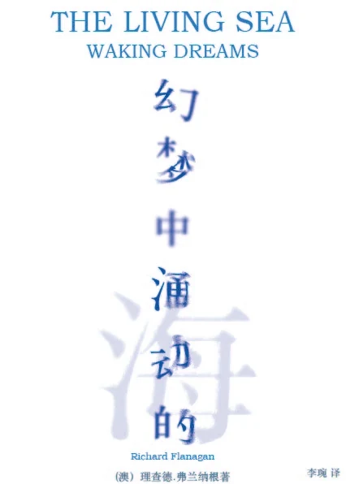
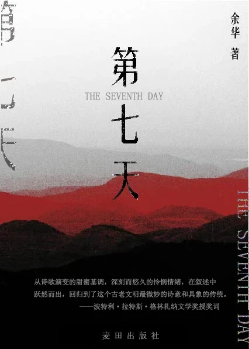
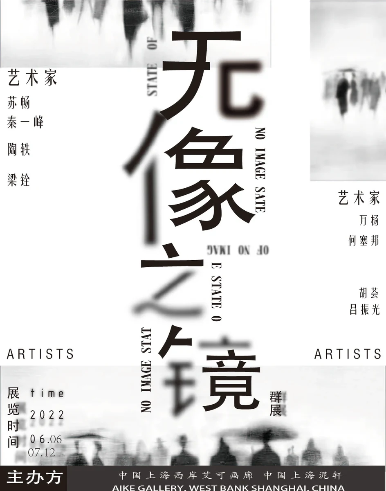
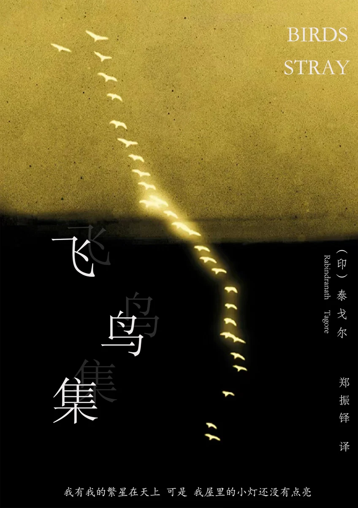

点击前方海报，或使用下方左右按钮翻看四张作品。作品详情可通过海报名称进入。
在图形、版式与影像之间，探索想法的不同表达。
当前海报：无象之境
关于城市、文化与日常的视觉探索。
我的作品围绕视觉传达展开：从福州城市 IP、文化信息设计，到杂志装帧与 AIGC 创作，尝试让不同的内容找到合适的表达方式。
海报切换需要 JavaScript。你仍可查看上方海报，或通过 联系入口（演示） 联系。